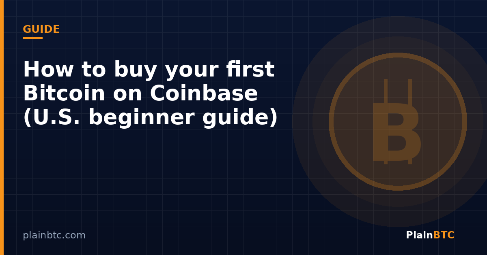

How to buy your first Bitcoin on Coinbase (U.S. beginner guide)

Buying bitcoin for the first time does not have to feel like learning a new language. If you live in the United States and want a regulated exchange with identity checks, Coinbase is one of the most common starting points—you can begin by opening a Coinbase account through our referral link. Bitcoin is available to buy on Coinbase’s centralized exchange, and you can fund purchases with approved methods such as a bank account, debit card, or wire (availability depends on your account and region).
This guide walks through the practical sequence: create an account, verify who you are, connect money, place a small first order, and avoid a few common beginner mistakes. It is educational, not a recommendation to buy any amount of crypto.
1. Create your Coinbase account
You can sign up in a browser or in the Coinbase mobile app. Coinbase’s help center describes the usual flow: enter your email, confirm a verification code, create a password, enter your legal first and last name as they appear on government ID, and verify a phone number with an SMS code. You can also start with Apple or Google sign-in where offered.
Use an email address you control long-term. Enable two-factor authentication as soon as the product prompts you—email alone is not enough security for an account that will hold money or crypto.
2. Complete identity verification
U.S. financial platforms are required to collect personal information to validate identity. Coinbase asks you to confirm you meet the age requirement (18+ in the U.S.), select citizenship, provide identifying details (including Social Security number information as requested), and make sure your personal information matches your government-issued photo ID. Have that ID ready; verification can take minutes or longer depending on review queues and document quality.
Tip: enter your name exactly as it appears on your ID. Mismatches are one of the most common reasons first-time verifications get delayed.
3. Add a payment method
After you can trade, connect a funding source. Coinbase’s buy guides list bank account, debit card, and wire among approved options. For many U.S. beginners, linking a bank account (ACH) is useful for larger or recurring buys, while a debit card can be faster for a small first purchase—often at a higher fee. Coinbase shows fee details on the order preview screen before you confirm.
Note from Coinbase’s Bitcoin how-to page: at this time, credit cards cannot be used to purchase bitcoin on Coinbase. U.S. customers may have additional options such as PayPal for supported assets; availability depends on region and product rules.
4. Place your first Bitcoin buy
On the website, Coinbase’s help documentation outlines a straightforward path:
- Select Buy on the Coinbase homepage (or Buy & Sell in the app).
- Enter the amount you want to spend in dollars—or switch to a bitcoin amount.
- Choose or confirm your payment method.
- Select Bitcoin (BTC) as the asset.
- Open Review order and check price, quantity, and fees.
- If everything looks right, select Buy now.
Minimum purchase amounts vary by asset and payment method. If you are below the minimum, Coinbase will notify you. For a first trade, many people intentionally buy a small dollar amount so they can learn the interface before scaling up.
5. Understand fees before you confirm
Coinbase states that fees are calculated when you place an order and can depend on location, payment method, order size, and market conditions such as volatility and liquidity. The important beginner habit is simple: always read the preview screen. That screen is where you see the all-in cost before funds move.
6. After you buy: storage and security basics
Your bitcoin will appear in your Coinbase account once the order settles. For small starter amounts, many people keep funds on the exchange while they learn. If your holdings grow, learn the difference between exchange custody and self-custody (hardware wallets, seed phrases, and recovery). Never share your password, 2FA codes, or seed phrase. Coinbase notes that it only sends confirmation emails from valid Coinbase addresses—treat unexpected “verify your account” emails with skepticism and open the app or site yourself instead of clicking links.
A calm way to start in a volatile week
Markets have been jumpy into early November 2026, with bitcoin trading near the mid $70,000s after a sharp weekend move. Volatility is exactly why beginners should separate learning the product from sizing a bet. Use an amount you can afford to see fluctuate. Consider whether a one-time buy or a recurring purchase fits your plan. And remember: buying spot bitcoin on an exchange is not the same as trading leveraged futures—where liquidations wiped out more than $1 billion in positions over a recent 24-hour stretch.
Want market context first? See today’s recap of bitcoin’s 50-week moving average break.
Start on Coinbase with this referral link
Open a new Coinbase account through the link below if you are ready to begin. Eligible new users may receive a bonus after a qualifying trade; terms vary by country and Coinbase’s current terms.
Sign up on Coinbase with this linkNot financial advice. This guide is educational only. It is not investment, trading, legal, or tax advice. Cryptocurrency is volatile and you can lose money. Confirm current steps, fees, and eligibility in Coinbase’s own help center before acting, and consider professional advice for your situation.